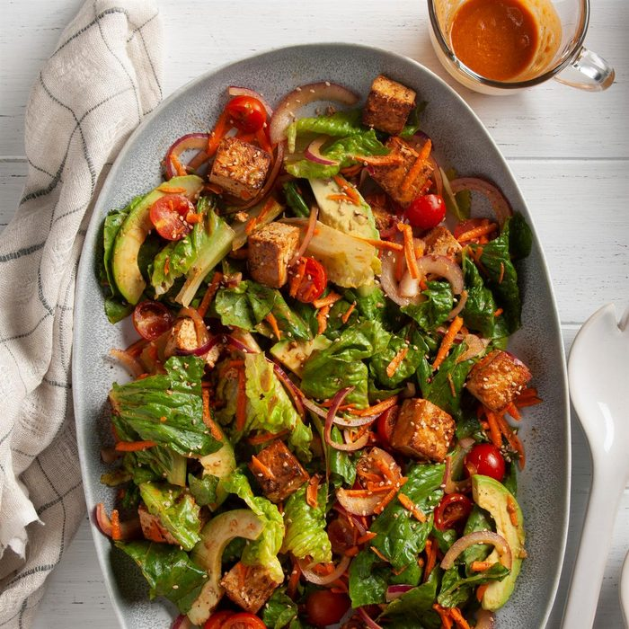

Tofu Salad

This is my favourite dish that me and my girlfriend share once a week, and can't wait to eat it together. This is originally a recipe we found online, but over time we have altered it to be our own.
The dish is a completely vegetarian-friendly meal that blends multiple different flavours into one. The prep time is approximately 20 minutes, the cooking time is 10 minutes. It can serve four, but we found we were still hungry if we made half, so we feel it serves three (or two very hungry people).
Ingredients:
- 16 oz. extra-firm tofu
- 1/4 cup rice vinegar
- 2/5 cup soy sauce
- 1 1/2 tbsp. sesame oil
- 2 tsp. sriracha
- 2 tbsp. peanut butter
- 1/4 tsp. ginger
- 2 tbsp. canola oil
- 6 cups torn romaine
- 2 medium carrots, shredded
- 1 ripe avocado. peeled and sliced
- 1/2 small red onion, thinly sliced
Directions:
- Squish (lightly) tofu dry. Wrap a kitchen towel around tofu and place on a plate. Let refrigerate for at least 1 hour. In a large shallow dish, whisk vinegar, soy sauce, sesame oil, Sriracha, peanut butter, and ginger until smooth. Add tofu; turn to coat. Cover and refrigerate for 3-5 hours, turning occasionally. Drain tofu reserving excess marinade; pat dry.
- In a large skillet, heat canola oil over medium-high heat. Add tofu; cook until crisp and golden brown, turning occasionally. Remove from pan; blot on paper towel.
- In a large bowl, combine romaine, carrots, avocado, onion, and tofu. Pour reserve marinade over salad; toss to coat. Ready to serve!